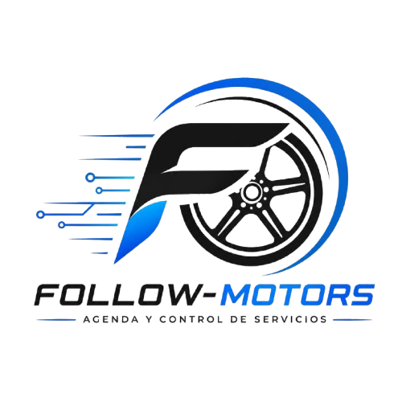
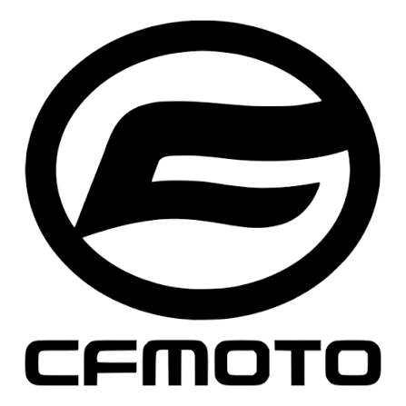
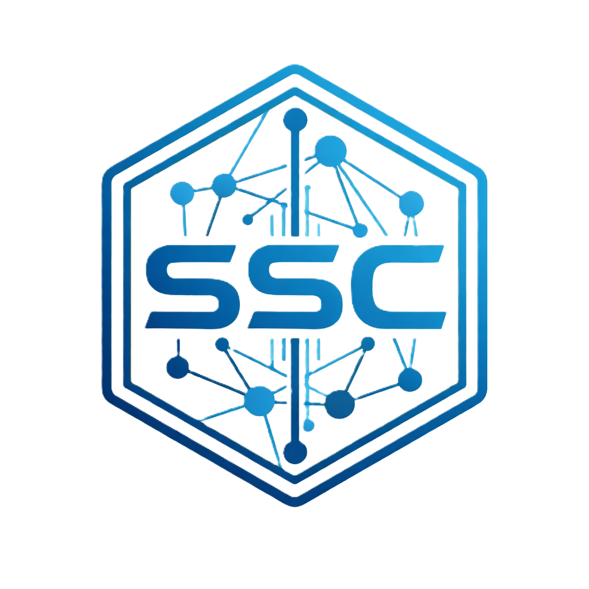
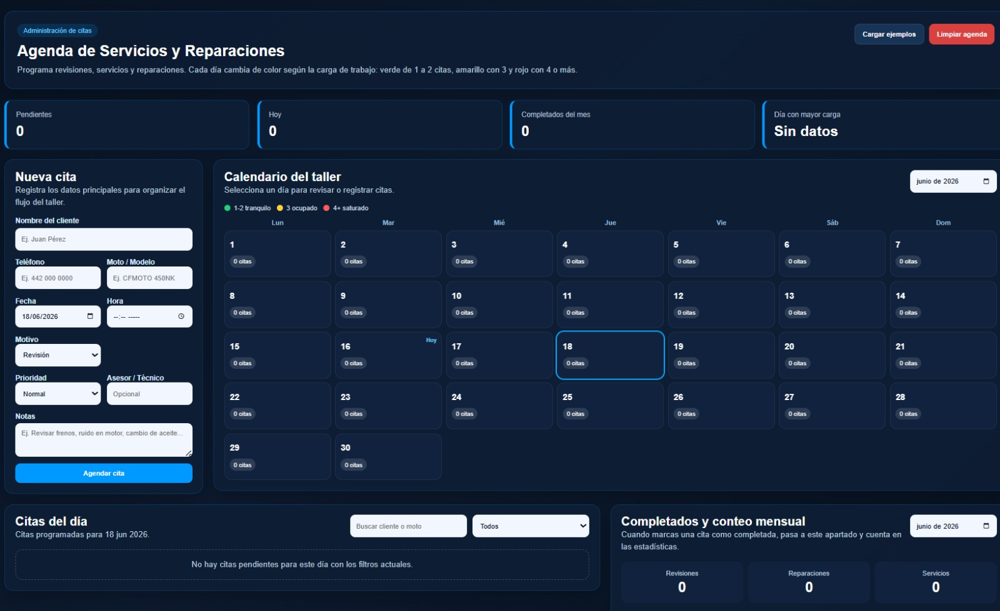

FOLLOW-MOTORS digitaliza la agenda, el seguimiento de servicios y el historial de mantenimiento de la agencia CFMOTO, para dejar atrás el papel y las citas perdidas.
Empresa reconocida internacionalmente por el diseño, fabricación y comercialización de motocicletas, vehículos todo terreno (ATV), utilitarios (UTV), side-by-side (SSV) y motores de alto rendimiento.

SSC (Smart Service Control) es una pagina web desarrollada para optimizar la gestión de citas y el seguimiento de servicios de mantenimiento de motocicletas dentro de la empresa CFMOTO. Su propósito es digitalizar los procesos administrativos y técnicos relacionados con la atención al cliente, permitiendo un mejor control de la información y una administración más eficiente de los servicios.
La pagina web surge como una solución para reemplazar los registros manuales por un sistema digital que facilite el almacenamiento, consulta y actualización de la información de clientes, unidades y servicios realizados. Con ello se busca reducir los tiempos de atención, evitar la pérdida de información y mejorar la organización del trabajo dentro de la empresa.

FOLLOW-MOTORS cuenta con una interfaz moderna e intuitiva que permite administrar las citas del taller, registrar clientes, controlar el calendario de servicios y dar seguimiento al mantenimiento de cada motocicleta desde una sola plataforma.

FOLLOW-MOTORS es un sistema de escritorio para digitalizar la administración de servicios en la agencia CFMOTO: registra clientes, controla citas, da seguimiento a cada servicio y conserva el historial de mantenimiento de cada unidad.
Programa, reagenda y visualiza la disponibilidad del taller en tiempo real.
Datos del cliente y de cada motocicleta, en un solo lugar.
Estado de cada mantenimiento, del ingreso a la entrega.
Consulta el historial completo de cada unidad sin buscar expedientes.
Avisos y recordatorios automáticos de próximas citas.
Menos papel, menos tiempo perdido, más atención al cliente.
Alta de clientes y de cada unidad asociada a su historial.
Programación y control de citas del taller.
Agenda con disponibilidad en tiempo real, reprogramación y recordatorios automáticos de citas para clientes y asesores.
Visibilidad del progreso: recibido, en proceso, listo para entrega.
Acceso rápido al historial de servicios de cualquier unidad.
Respuestas más rápidas y menos tiempo de espera.
Reducir tareas manuales repetitivas dentro de la agencia.
Un flujo de cuatro pasos, desde que el cliente llega hasta que la unidad sale del taller.
Se da de alta al cliente y a la motocicleta si es su primera visita.
Se programa la cita según la disponibilidad del taller.
Se da seguimiento al mantenimiento y su estado en tiempo real.
Se actualiza el historial y se notifica al cliente que su unidad está lista.